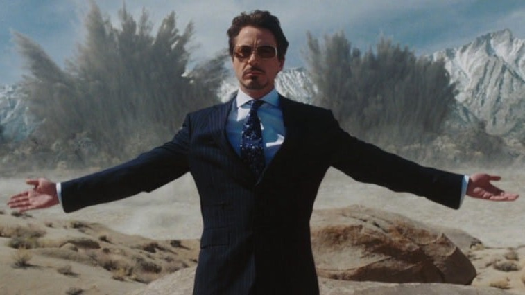
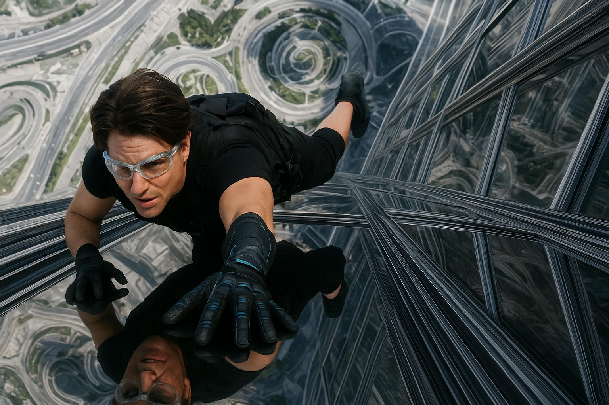
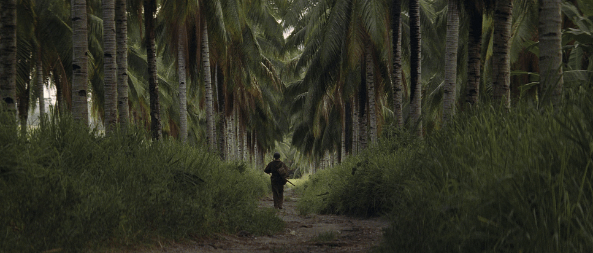
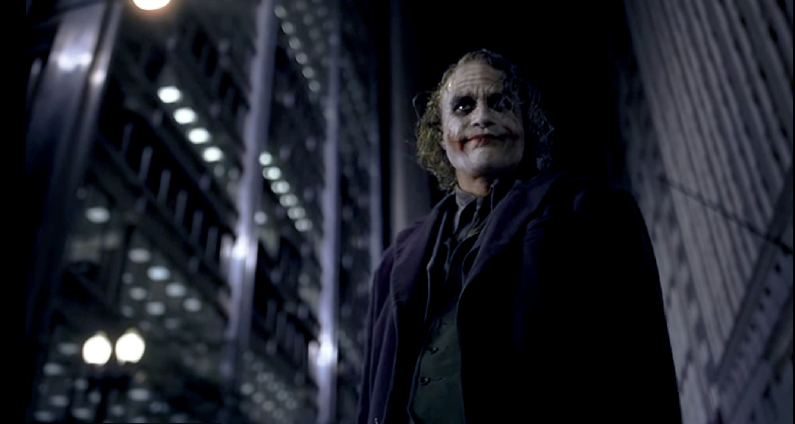

Website Building SoftwareFilm composition is the visual arrangement of elements in a movie frame, using lighting, angles, color, and framing to express emotion and tell a story.
电影构图是指在电影画面中，导演与摄影师通过画面安排、光影、角度、比例、对称、景深、色彩与空间关系等元素，来传达情感、气氛与叙事意义的一种视觉设计方式。

Symmetrical composition balances elements on both sides of the frame, creating a sense of order and harmony.
对称构图是在画面两侧保持元素平衡，营造出一种秩序与和谐的感觉。

Bird’s-eye View is a composition technique that captures a scene from high above, as if seen from a bird flying in the sky.
（鸟瞰视角）是一种从高处向下拍摄的构图方式，就像鸟在空中看地面一样。

Leading Lines is a composition technique where lines in the scene guide the viewer’s eyes toward the main subject or deeper into the frame.
引导线构图是一种利用画面中的线条引导观众视线的方法，引导目光集中到主要主体或画面深处。

Website Building Software